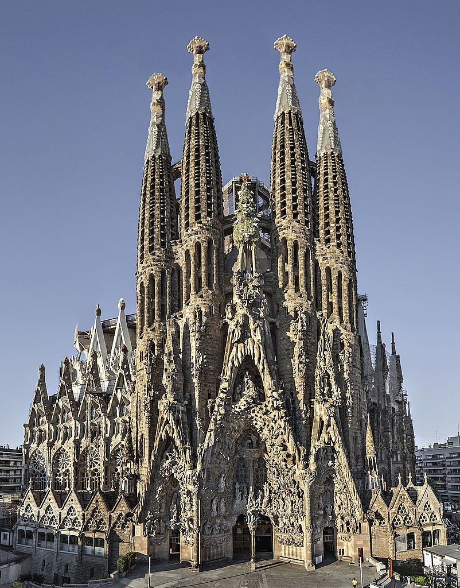

Before last summer, I had never been on a plane before nor had the chance to travel outside of the United States. Although, I have been to Canada, but do not count it because it is literally 30 minutes away from where I live, lol. After 20 years of never traveling anywhere, I thankfully finally had the opportunity to travel somewhere. A cousin of mine was getting married in Barcelona, Spain, and flew my mom, my sister, and I out to attend her wedding. My first time on a plane was pretty nerve-wracking, but not as terrible as I was expecting it to be. Due to my excitement, I found myself not being able to sleep for the entire ride there, which was 13 hours in total. We were in Barcelona for a week and mainly went to a bunch of tourist attractions, but it was still so beautiful. My favorite place that we went to was the Sagrada Família church. The amount of intricate detail that is carved into every part of the building is absolutely insane and is such a breathtaking site. The wedding was also lots of fun, and it was great to reunite with my cousins again after 12 years. I’m really thankful that I finally got to travel overseas and look forward to hopefully traveling more in the future.

Should I Switch My Major? (The Answer is Yes)
Alana Asmar
When I first started college, I was a creative advertising major. I absolutely hated it. It was all marketing, which I found extremely boring and did not like at all. The best thing that I got out of that major was a beginner’s web development class. In that class, I learned HTML and CSS and really enjoyed it, so I figured I wanted to do something with that. I then went on a search through the different majors offered at MSU, and the one that caught my attention was Experience Architecture. When I first read the name, I thought it actually had to do with building architecture; come to find out, it did not at all. I learned that it was about user experience design and research; however, I didn’t fully understand what that meant. I took a look at the course list and noticed some web development and graphic design classes, which I was interested in, and decided to give it a shot and switch my major. I was an XA major for 3 semesters and really enjoyed it, but there was something about it that was not fulfilling for me. I went through the major list again and found Information Sciences. I took one class to see what this major was about before I decided to switch or not. I enjoyed the more technical aspect that this major had to offer and decided to finally make the switch and have stuck with it ever since.